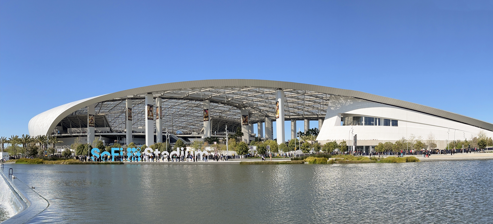
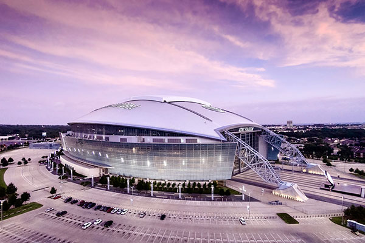
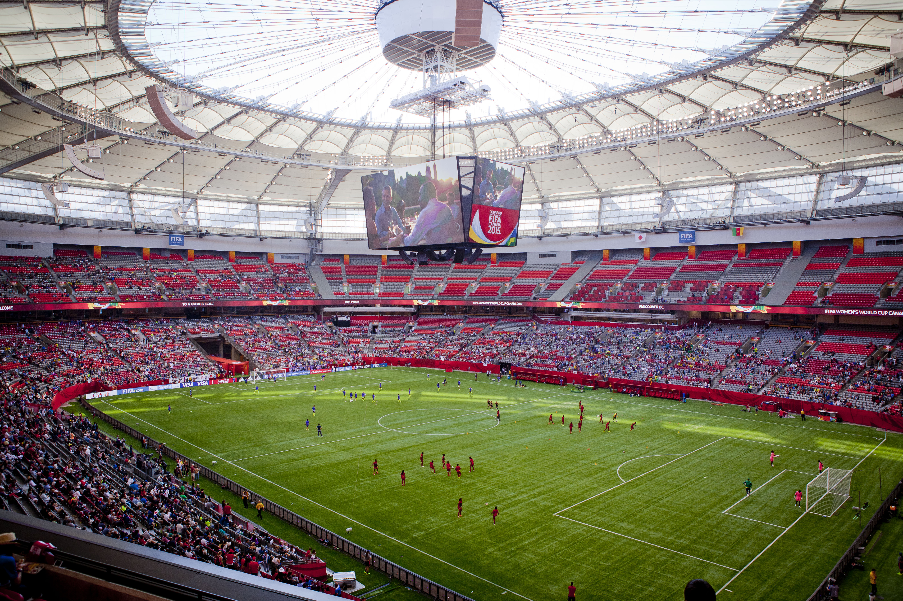
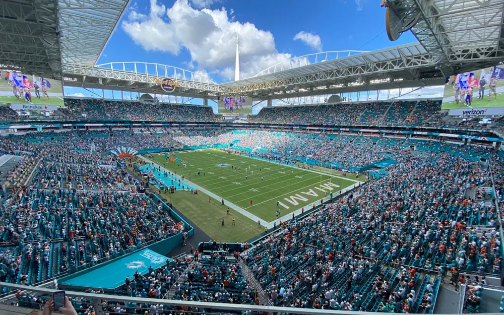

Guia completo da maior Copa da história
Copa do Mundo 2026
Tudo sobre sedes, formato, datas, estádios, selecoes, história e recordes em um site informativo inspirado nas cores da Seleção Brasileira.
0
dias
0
horas
0
min
0
seg
Visão geral
O Essencial em 30 Segundos
Dados gerais da edição de 2026 organizados para consulta rápida.
0
Seleções
Primeira edição masculina com 48 participantes.
0
Partidas
O novo formato amplia a competição de ponta a ponta.
0
Cidades-sede
Jogos espalhados por Canadá, México e Estados Unidos.
0
Grupos
Cada grupo terá quatro selecoes na primeira fase.
Identidade visual
Amarelo no Claro, Azul no Escuro
A página usa a ideia dos uniformes do Brasil como linguagem visual: azul profundo como base, amarelo neon para destaque e verde em detalhes de energia. A intenção é lembrar a Seleção sem transformar o site em uma página apenas do Brasil.
Tema claro
Canário
Tema escuro
Azul
Como funciona
Formato da Copa 2026
As 48 selecoes serão divididas em 12 grupos com quatro equipes. Avançam para o mata-mata as duas melhores de cada grupo e as oito melhores terceiras colocadas.
A fase eliminatória começa com 32 selecoes e segue até a final, marcada para 19 de julho de 2026, na região de Nova York/Nova Jersey.
48
fase de grupos
32
mata-mata
1
campeão
América do Norte
Três Países-Sede
Será a primeira Copa masculina organizada por três países.
🇨🇦
Canadá
Toronto e Vancouver recebem partidas e colocam o país no centro de uma Copa masculina pela primeira vez.
🇲🇽
México
Guadalajara, Cidade do México e Monterrey reforçam a tradição mexicana em Copas do Mundo.
🇺🇸
Estados Unidos
Onze cidades americanas recebem jogos, incluindo a final no MetLife Stadium.
Palcos do torneio
Estádios em Destaque
Blocos preparados para fotos reais. Por enquanto, alguns usam imagem padrão estilizada.

Cidade do México
Estádio Azteca
Palco da abertura e estádio histórico das Copas de 1970 e 1986.

Nova York/Nova Jersey
MetLife Stadium
Receberá a grande final da Copa do Mundo de 2026.

Los Angeles
SoFi Stadium
Arena moderna de Inglewood e um dos símbolos visuais do torneio.

Dallas
AT&T Stadium
Um dos maiores palcos da edição, com grande capacidade e muitos jogos.

Vancouver
BC Place
Representa a costa oeste canadense na rota da Copa 2026.

Miami
Hard Rock Stadium
Receberá jogos decisivos, incluindo a disputa de terceiro lugar.
No site
Grupos e Seleções Trabalhadas
O menu de selecoes foi organizado por países-sede e grupos destacados.
Grupo C
🇧🇷 Brasil
🇲🇦 Marrocos
🇭🇹 Haiti
Escócia
Grupo I
🇫🇷 França
🇸🇳 Senegal
🇳🇴 Noruega
🇮🇶 Iraque
Grupo J
🇦🇷 Argentina
🇩🇿 Argélia
🇦🇹 Áustria
🇯🇴 Jordânia
Sedes
🇲🇽 México
🇨🇦 Canadá
🇺🇸 Estados Unidos
16 cidades no total
Calendário
Datas que Importam
11 jun
Abertura da Copa no México.
Fase 1
12 grupos, cada seleção joga três partidas.
32
Começo do mata-mata com 32 classificados.
19 jul
Final em Nova York/Nova Jersey.
Continue explorando
Quer ir mais fundo
Veja a história da Copa, confira recordes, navegue pelas selecoes ou use o simulador para testar a Copa inteira.